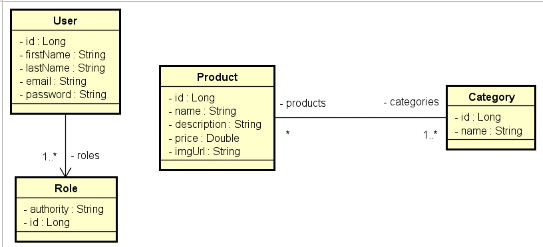
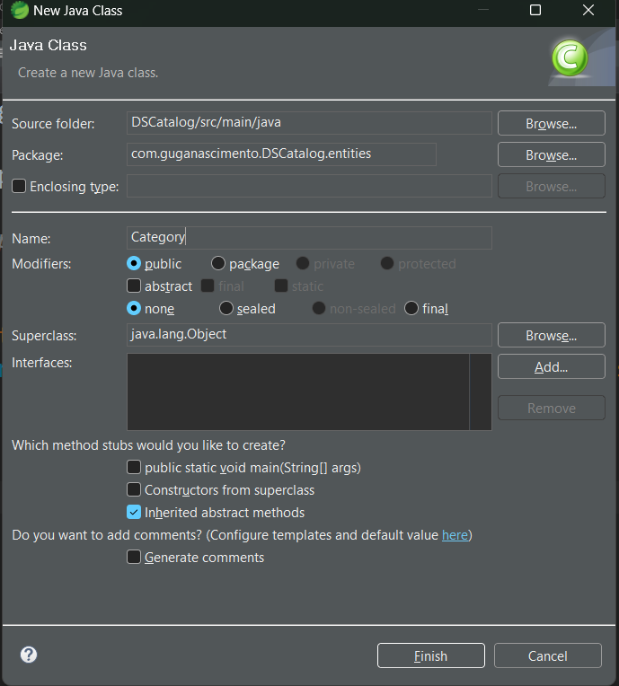
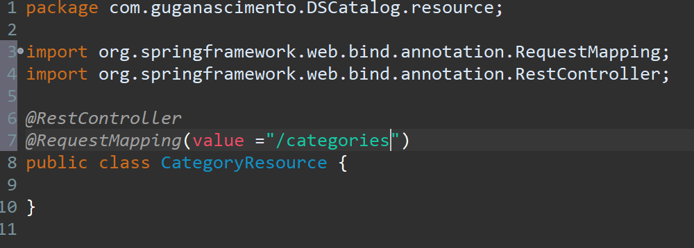
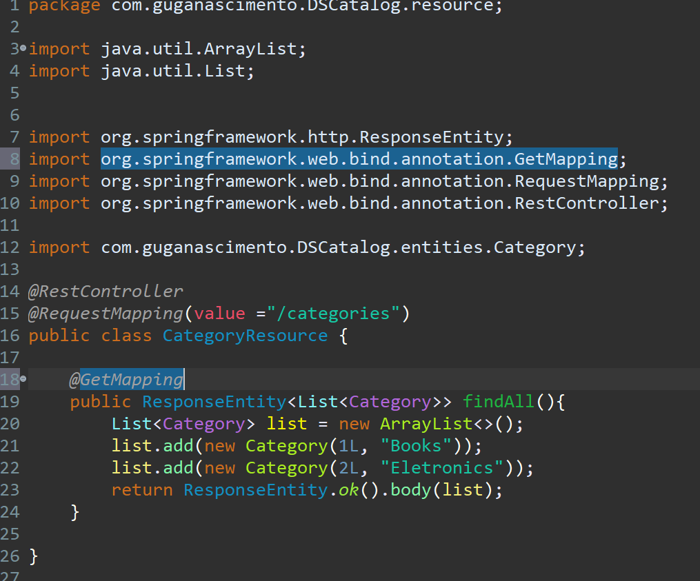
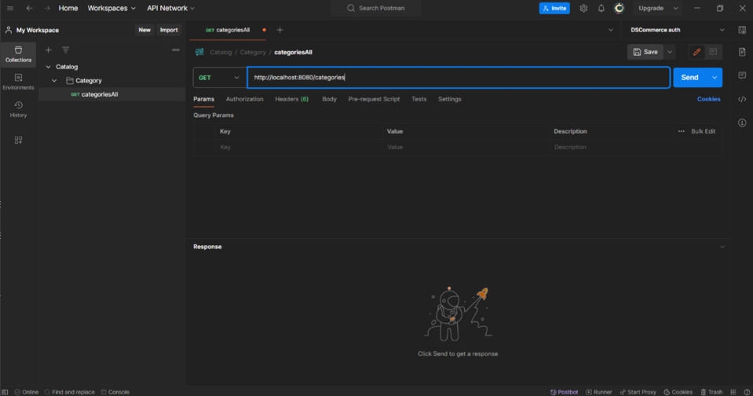
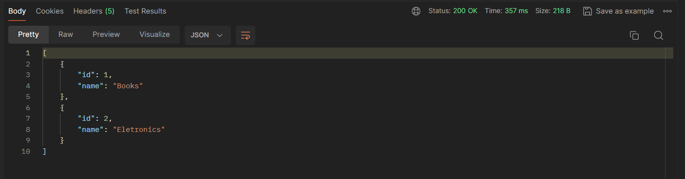

Modelo de domínio
Seguindo esse modelo de domínio iniciamos a criação primeiro da classe independente a Category.
 Com esse comando criamos a classe Category dentro do pacote entities.Uma classe Java recebe seus atributos todos declarados como private por motivo de encapsulamento, depois
inserimos os gets e sets.
Agora criamos o Construtor padrão e o Construtor com argumentos que serão
usados na instanciação dos objetos do sistema.
Agora vamos inserir o hashcode e equals para ter um parâmetro
de comparação entre duas classes. Comparando apenas com id.

Agora pensando no sistema de camadas vamos criar dentro do pacote resource a class CategoryResource.

Inserindo e importando a annotation @RestController para informar que está classe é um controlador REST.
Agora Inserimos a @RequestMapping para passar a rota rest do recurso. sabemos então que esse recurso
responde nessa rota /categories.
Dentro da classe vamos criar o método ResponseEntity que é um método que vai encapsular uma resposta http.
Esse método é do tipo Generics que indica dentro <> o tipo de dado que vai receber, e chamamos o findAll que retorna todas
as categorias do sistema.

Linha20: Criamos uma List que é uma interfaceJava do tipo Category que é a classe que criamos instanciando com o ArrayList que é
o padrão usado no List.
Linha 21 e 22: Inserimos duas categorias em nosso sistema.
Linha 23: Feito o return ResponseEntity.ok().body(list); onde o método chama o ok que permite eu responder uma resposta 200
que é quando a requisição foi aceita e o recurso foi entregue.
O .body(recebendo list para definir o corpo da resposta).
Por fim para configurar que esse método vai ser um endpoint do meu recurso categories inserimos o @GetMapping como visto
na imagem acima.
Iniciando teste no POSTMAN
Após criar uma nova collection no postman e nomear de Catalog e criar a requisição categoriesAll executamos o teste e recebemos como retorno a resposta abaixo, trazendo todas as categorias do sistema.
Concluimos então a classe Category.
Criando a classe CategoryService para que nela tenha a regra de negócios
Métodos
findAllPaged(Pageable pageable):
Este método é responsável por recuperar todas as categorias de forma paginada. Ele utiliza o CategoryRepository para acessar o banco de dados e recuperar os dados. Ele retorna uma página de CategoryDTO, que contém os dados das categorias de forma mais simplificada.
findById(Long id):
Este método recupera uma categoria específica com base no seu ID. Ele utiliza o CategoryRepository para buscar a categoria no banco de dados. Se a categoria não for encontrada, uma exceção ResourceNotFoundException é lançada.
insert(CategoryDTO dto):
Este método insere uma nova categoria no banco de dados. Ele cria uma nova instância da entidade Category, define seus atributos com base nos dados fornecidos no DTO e utiliza o CategoryRepository para salvar a categoria no banco de dados. Em seguida, ele retorna um CategoryDTO representando a categoria recém-criada.
update(Long id, CategoryDTO dto):
Este método atualiza uma categoria existente no banco de dados com base no seu ID. Ele busca a categoria pelo ID usando o método getReferenceById do CategoryRepository. Se a categoria não for encontrada, uma exceção ResourceNotFoundException é lançada. Se a categoria for encontrada, seus atributos são atualizados com base nos dados fornecidos no DTO e, em seguida, a categoria é salva no banco de dados. O método retorna um CategoryDTO representando a categoria atualizada.
delete(Long id)
Este método exclui uma categoria do banco de dados com base no seu ID. Primeiro, ele verifica se a categoria existe no banco de dados usando o método existsById do CategoryRepository. Se a categoria não existir, uma exceção ResourceNotFoundException é lançada. Se a categoria existir, ela é excluída do banco de dados. Se houver uma violação de integridade de dados durante a exclusão, uma exceção DatabaseException é lançada.
Esses métodos encapsulam a lógica de negócios relacionada à manipulação de categorias e garantem que as operações no banco de dados sejam realizadas de forma segura e consistente. A classe CategoryService atua como uma camada intermediária entre os controllers e os repositories, fornecendo uma abstração de alto nível para as operações relacionadas a categorias. Isso ajuda a manter o código organizado, modular e fácil de dar manutenção.
Annotation Spring
A classe CategoryService contém várias anotações do Spring Framework, cada uma com um propósito específico. Vou explicar o significado de cada anotação presente na classe:
@Service:
Esta anotação marca a classe como um componente de serviço do Spring. Os componentes anotados com @Service são detectados automaticamente pelo Spring durante a varredura de componentes e são instanciados como beans gerenciados pelo contêiner do Spring. Eles geralmente representam a camada de serviço em uma aplicação Spring, onde a lógica de negócios é implementada.
@Autowired:
Esta anotação é usada para injetar dependências no Spring. No caso desta classe, a anotação @Autowired é usada para injetar uma instância de CategoryRepository na variável repository. Isso permite que a classe CategoryService acesse métodos definidos em CategoryRepository para interagir com o banco de dados.
@Transactional:
Esta anotação é usada para configurar transações declarativas em métodos ou classes. Quando aplicada a um método, como em findAllPaged, findById, insert, update e delete, indica que esses métodos devem ser executados dentro de uma transação. Além disso, o atributo readOnly = true indica que esses métodos não realizarão operações de escrita no banco de dados, apenas leitura. O método delete possui o atributo propagation = Propagation.SUPPORTS, que indica que ele suportará transações existentes se já estiverem em andamento, mas não criará uma nova transação se nenhuma estiver presente.
@Transactional (dentro do método update):
Além da anotação @Transactional aplicada ao nível do método, há outra anotação @Transactional dentro do bloco try-catch do método update. Neste caso, a anotação está sendo aplicada apenas ao bloco de código dentro do try, indicando que apenas esse bloco deve ser executado dentro de uma transação. Isso permite controlar mais precisamente o escopo da transação.
Essas anotações são fundamentais para o funcionamento correto da classe CategoryService dentro do contexto do Spring Framework. Elas ajudam a garantir que as dependências sejam injetadas corretamente, que as operações no banco de dados sejam executadas dentro do contexto de transação apropriado e que a lógica de negócios seja executada de maneira segura e consistente.
Essa linha de código está utilizando a anotação @Autowired para injetar uma dependência do tipo CategoryRepository na variável
repository da classe CategoryService.
Quando uma classe é anotada com @Autowired, o Spring automaticamente detecta essa anotação e tenta encontrar uma instância
adequada do tipo especificado para injetar na variável anotada. No caso específico da linha de código fornecida:
@Autowired: Esta anotação indica ao Spring que a dependência da variável repository deve ser injetada automaticamente pelo
contêiner de IoC (Inversion of Control) do Spring. O Spring procurará uma instância de CategoryRepository e a injetará na variável
repository quando a classe CategoryService for inicializada.
private CategoryRepository repository;: Aqui, repository é uma variável privada da classe CategoryService do tipo CategoryRepository.
Através da injeção de dependência realizada pelo Spring, a variável repository será inicializada com uma instância de
CategoryRepository. Essa instância é fornecida pelo Spring, que gerencia o ciclo de vida dos beans na aplicação.
Essa abordagem de injeção de dependência ajuda a manter o código mais limpo, modular e fácil de testar, pois reduz a necessidade
de criar manualmente instâncias de dependências dentro da classe e permite que o Spring gerencie as dependências e suas instâncias.
Isso promove a coesão e o desacoplamento entre os diferentes componentes da aplicação.